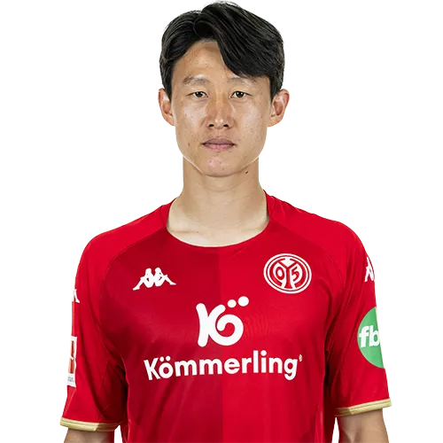

이재성
Lee Jaesung


소속팀 :
FSV 마인츠 05
FSV 마인츠 05
출생 :
1992년 8월 10일 (30세) 울산광역시 남구 야음동
1992년 8월 10일 (30세) 울산광역시 남구 야음동
신체 :
키 180cm / 체중 70kg
키 180cm / 체중 70kg
포지션 :
공격형 미드필더, 중앙 미드필더, 윙어, 중앙 공격수
공격형 미드필더, 중앙 미드필더, 윙어, 중앙 공격수
주발 :
왼발
왼발
플레이스타일 :
이재성의 주 포지션은 공격형 미드필더이지만, 필요시 중앙 미드필더, 수비형 미드필더, 세컨드 스트라이커, 윙어 등 3선부터 1.5선까지 고루고루 뛸 수 있다. 그래서 이재성이 몸 담았던 클럽팀이나 국가대표팀에선 상대팀의 전술에 따라 여러 위치에 기용되서 활약하기도 하며, 어느 자리에서나 1인분은 기본적으로 해주는 선수이다. 유럽 진출 후에는 플레이스타일이 조금 바뀌었다. 테크닉적인 부분은 최소화하고, 최대한 간결한 동작이나 원터치패스로 탈압박을 하고, 오프더볼이나 위치선정을 적극적으로 활용해서 골을 넣거나 공수 양면으로 활약하게 되었다. 특히 오프더볼 부분은 분데스리가의 FC 바이에른 뮌헨 소속의 토마스 뮐러를 롤 모델 삼아 많이 배우고 있다고 밝혔다.
이재성의 주 포지션은 공격형 미드필더이지만, 필요시 중앙 미드필더, 수비형 미드필더, 세컨드 스트라이커, 윙어 등 3선부터 1.5선까지 고루고루 뛸 수 있다. 그래서 이재성이 몸 담았던 클럽팀이나 국가대표팀에선 상대팀의 전술에 따라 여러 위치에 기용되서 활약하기도 하며, 어느 자리에서나 1인분은 기본적으로 해주는 선수이다. 유럽 진출 후에는 플레이스타일이 조금 바뀌었다. 테크닉적인 부분은 최소화하고, 최대한 간결한 동작이나 원터치패스로 탈압박을 하고, 오프더볼이나 위치선정을 적극적으로 활용해서 골을 넣거나 공수 양면으로 활약하게 되었다. 특히 오프더볼 부분은 분데스리가의 FC 바이에른 뮌헨 소속의 토마스 뮐러를 롤 모델 삼아 많이 배우고 있다고 밝혔다.
등번호 :
국가대표 10번, 클럽팀 7번
국가대표 10번, 클럽팀 7번
팀 커리어 :
전북 현대 모터스 (2014~2018) -> 홀슈타인 킬 (2018~2021) -> FSV 마인츠 05 (2021~ )
전북 현대 모터스 (2014~2018) -> 홀슈타인 킬 (2018~2021) -> FSV 마인츠 05 (2021~ )
국가대표 :
69경기 9골 (대한민국 / 2015~ )
69경기 9골 (대한민국 / 2015~ )
SNS :
 |
| 
|
좋아요 :